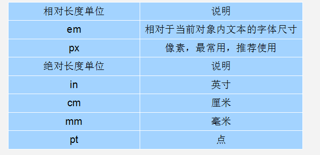

CSS简介
CSS全称为“层叠样式表 (Cascading Style Sheets)”，它主要是用于定义HTML内容在浏览器内的显示样式，如文字大小、颜色、字体加粗等。
CSS的优点
- 将创建文档内容和文档表现分离
- 通过引入外部样式可以同时改变所有页面的布局和样式
CSS语法
CSS 语法由两个主要的部分构成：选择器，以及一条或多条声明
选择器主要是用于指定改变样式的 HTML 元素。每条声明是由一个属性和一个值组成。
属性（property）是希望设置的样式属性（style attribute），每个属性有一个值。属性和值用冒号:分开
多个属性之间用;进行区分
1 | /*设置div的背景颜色为粉色*/ |
CSS的注释语法以 “/“ 开始, 以 “/“ 结束。
CSS创建
当读取到一个样式表时，浏览器会根据它来格式化 HTML 文档。插入样式表的方法有以下三种：
内联样式（行内式）
css代码直接写在现有的HTML标签中。由于要将表现和内容混杂在一起，内联样式会损失掉样式表的许多优势。请慎用这种方法
语法格式如下：
1 | <标签名 style="属性1:属性值1; 属性2:属性值2; 属性3:属性值3;"> 内容 </标签名> |
语法中style是标签的属性，实际上任何HTML标签都拥有style属性，用来设置行内式。其中属性和值的书写规范与CSS样式规则相同，行内式只对其所在的标签及嵌套在其中的子标签起作用。
内部样式表(嵌入式)
当单个文档需要特殊的样式时，就应该使用内部样式表。
可以使用 <style> 标签在文档头部定义内部样式表
语法格式如下：
1 | <head> |
语法中，style标签一般位于head标签中title标签之后，也可以把他放在HTML文档的任何地方。
type=”text/CSS” 在html5中可以省略， 写上也比较符合规范， 所以这个地方可以写也可以省略。
如：
1 | <head> |
外部样式表(外链式)
当样式需要应用于很多页面时，外部样式表将是理想的选择。在使用外部样式表的情况下，你可以通过改变一个文件来改变整个站点的外观。每个页面使用<link> 标签链接到样式表，<link> 标签在（文档的）头部
1 | <head> |
浏览器会从文件style.css中读到样式声明,并根据它来格式文档。
外部样式表可以在任何文本编辑器中进行编辑，但是文件不能包含任何的 html 标签，样式表应该以 .css 扩展名进行保存
注意：
1、css样式文件名称以有意义的英文字母命名，如 main.css。
2、rel=”stylesheet” type=”text/css” 是固定写法不可修改。
3、<link>标签位置一般写在<head>标签之内。
样式优先级
内联式 > 嵌入式 > 外部式
但是嵌入式>外部式有一个前提：嵌入式css样式的位置一定在外部式的后面。
其实总结来说，就是--就近原则（离被设置元素越近优先级别越高）。
但注意上面所总结的优先级是有一个前提：内联式、嵌入式、外部式样式表中css样式是在的相同权值的情况下
基本选择器
每一条css样式声明（定义）由两部分组成，形式如下：
1 | 选择器{ |
在{}之前的部分就是“选择器”，“选择器”指明了{}中的“样式”的作用对象，也就是“样式”作用于网页中的哪些元素。
标签选择器
标签选择器是指用HTML标签名称作为选择器，按标签名称分类，为页面中某一类标签指定统一的CSS样式。其基本语法格式如下：
1 | 标签名{属性1:属性值1; 属性2:属性值2; 属性3:属性值3; } |
标签选择器最大的优点是能快速为页面中同类型的标签统一样式，同时这也是他的缺点，不能设计差异化样式。
类选择器
类选择器在css样式编码中是最常用到的
语法：
1 | .类选器名称{属性1:属性值1; 属性2:属性值2; 属性3:属性值3; } |
注意：
1、英文圆点开头
2、其中类选器名称可以任意起名（但不要起中文噢）
使用方法：
第一步：使用合适的标签把要修饰的内容标记起来，如下：
1 | <span>胆小如鼠</span> |
第二步：使用class=”类选择器名称”为标签设置一个类，如下：
1 | <span class="stress">胆小如鼠</span> |
第三步：设置类选器css样式，如下：
1 | .stress{color:red;}/*类前面要加入一个英文圆点*/ |
类选择器最大的优势是可以为元素对象定义单独或相同的样式。 可以选择一个或者多个标签
多类名选择器
我们可以给标签指定多个类名，从而达到更多的选择目的。

1 | 1. 样式显示效果跟HTML元素中的类名先后顺序没有关系,受CSS样式书写的上下顺序有关。 |
多类名选择器在后期布局比较复杂的情况下，还是较多使用的。
如：
1 | <div class="pink fontWeight font20">亚瑟</div> |
ID选择器
在很多方面，ID选择器都类似于类选择符，其基本语法：
1 | #id名{属性1:属性值1; 属性2:属性值2; 属性3:属性值3; } |
但也有一些重要的区别：
1、为标签设置id=”ID名称”，而不是class=”类名称”。
2、ID选择符的前面是井号（#）号，而不是英文圆点（.）。
ID选择器和类选择器的区别
相同点：可以应用于任何元素
不同点：
ID选择器只能在文档中使用一次。与类选择器不同，在一个HTML文档中，ID选择器只能使用一次，而且仅一次。而类选择器可以使用多次。
可以使用类选择器词列表方法为一个元素同时设置多个样式。我们可以为一个元素同时设多个样式，但只可以用类选择器的方法实现，ID选择器是不可以的（不能使用 ID 词列表）。
如下：
1
2
3
4
5
6
7.stress{
color:red;
}
.bigsize{
font-size:25px;
}
<p>到了<span class="stress bigsize">三年级</span>下学期时，我们班上了一节公开课...</p>上面代码的作用是为“三年级”三个文字设置文本颜色为红色并且字号为25px。这里给三年级这个span标签设置了两个类词。
通用选择器
通用选择器是功能最强大的选择器，它使用一个（*）号指定，它的作用是匹配html中所有标签元素，如下使用下面代码使用html中任意标签元素字体颜色全部设置为红色：
1 | * {color:red;} |
复合选择器
子选择器
子元素选择器只能选择作为某元素子元素的元素。其写法就是把父级标签写在前面，子级标签写在后面，中间跟一个 大于符号>进行连接.

白话： 这里的子 指的是 亲儿子 不包含孙子 重孙子之类。
1 | 如 .food > li{border:1px solid red;} |
这行代码会使class名为food下的子元素li（水果、蔬菜）加入红色实线边框。
包含(后代)选择器
后代选择器又称为包含选择器，用来选择元素或元素组的后代，其写法就是把外层标签写在前面，内层标签写在后面，中间用空格分隔。当标签发生嵌套时，内层标签就成为外层标签的后代。
其用法如图

1 | 如：.first span{color:red;} |
请注意这个选择器与子选择器的区别，子选择器（child selector）仅是指它的直接后代，或者你可以理解为作用于子元素的第一代后代。而后代选择器是作用于所有子后代元素。后代选择器通过空格来进行选择，而子选择器是通过“>”进行选择。
总结：>作用于元素的第一代后代，空格作用于元素的所有后代。
交集选择器
交集选择器由两个选择器构成，其中第一个为标签选择器（也可以是其他的），第二个为class选择器（也可以是其他的），两个选择器之间不能有空格，如h3.special。
交集选择器 是 并且的意思。 即…又…的意思
1 | 比如： p.one 选择的是： 类名为 .one 的 段落标签。 |
用的相对来说比较少，不太建议使用。
伪类选择器
它允许给html不存在的标签（标签的某种状态）设置样式，比如说我们给html中一个标签元素的鼠标滑过的状态来设置字体颜色：
1 | a:hover{color:red;} |
上面一行代码就是为 a 标签鼠标滑过的状态设置字体颜色变红。这样就会使第一段文字内容中的“胆小如鼠”文字加入鼠标滑过字体颜色变为红色特效。
链接伪类选择器
:link / 未访问的链接 /
:visited / 已访问的链接 /
:hover / 鼠标移动到链接上 /
:active / 选定的链接 鼠标按下的时候 /
注意写的时候，他们的顺序尽量不要颠倒
记忆:
lovehat e
实际开发中：只设置a标签的属性和悬停时的属性
如：
1 | a { /* a是标签选择器 所有的链接 */ |
关于伪选择符：
关于伪类选择符，到目前为止，可以兼容所有浏览器的“伪类选择符”就是 a 标签上使用 :hover 了（其实伪类选择符还有很多，尤其是 css3 中，但是因为不能兼容所有浏览器）。其实 :hover 可以放在任意的标签上，比如说 p:hover，但是它们的兼容性也是很不好的，所以现在比较常用的还是 a:hover 的组合。
分组选择器（并集选择器）
当你想为html中多个标签元素设置同一个样式时，可以使用分组选择符（，），如下代码为右侧代码编辑器中的h1、span标签同时设置字体颜色为红色：
1 | h1,span{color:red;} |
它相当于下面两行代码：
1 | h1{color:red;} |
总结
子选择器：用>隔开，选取亲儿子
后代选择器：用空格隔开，选取所有后代
交集选择器：标签连写 不隔开
并集选择器：用,隔开 集体声明
CSS三大特性
层叠 继承 优先级 是学习CSS 必须掌握的三个特性。
继承性
CSS的某些样式是具有继承性的，那么什么是继承呢？继承是一种规则，它允许样式不仅应用于某个特定html标签元素，而且应用于其后代。比如下面代码：如某种颜色应用于p标签，这个颜色设置不仅应用p标签，还应用于p标签中的所有子元素文本，这里子元素为span标签。
1 | p{color:red;} |
可见右侧结果窗口中p中的文本与span中的文本都设置为了红色。但注意有一些css样式是不具有继承性的。如border:1px solid red;
注意
恰当地使用继承可以简化代码，降低CSS样式的复杂性。子元素可以继承父元素的样式（text-，font-，line-这些元素开头的都可以继承，以及color属性）
优先级
定义CSS样式时，经常出现两个或更多规则应用在同一元素上，这时就会出现优先级的问题。
在考虑权重时，初学者还需要注意一些特殊的情况，具体如下：
1 | 继承样式的权重为0。即在嵌套结构中，不管父元素样式的权重多大，被子元素继承时，他的权重都为0，也就是说子元素定义的样式会覆盖继承来的样式。 |
特殊性(Specificity)
关于CSS权重，我们需要一套计算公式来去计算，这个就是 CSS Specificity，我们称为CSS 特性或称非凡性，它是一个衡量CSS值优先级的一个标准 具体规范入如下：
specificity用一个四位的数 字串(CSS2是三位)来表示，更像四个级别，值从左到右，左面的最大，一级大于一级，数位之间没有进制，级别之间不可超越。
| 继承或者* 的贡献值 | 0,0,0,0 |
|---|---|
| 每个元素（标签）贡献值为 | 0,0,0,1 |
| 每个类，伪类贡献值为 | 0,0,1,0 |
| 每个ID贡献值为 | 0,1,0,0 |
| 每个行内样式贡献值 | 1,0,0,0 |
| 每个!important贡献值 | ∞ 无穷大 |
权重是可以叠加的
1 | div ul li ------> 0,0,0,3 |
注意
1.数位之间没有进制 比如说： 0,0,0,5 + 0,0,0,5 =0,0,0,10 而不是 0,0, 1, 0， 所以不会存在10个div能赶上一个类选择器的情况。
2.继承的 权重是 0
总结优先级：
- 使用了 !important声明的规则。
- 内嵌在 HTML 元素的 style属性里面的声明。
- 使用了 ID 选择器的规则。
- 使用了类选择器、属性选择器、伪元素和伪类选择器的规则。
- 使用了元素选择器的规则。
- 只包含一个通用选择器的规则。
- 同一类选择器则遵循就近原则。
- 看优先级，首先看能不能选到该元素，不能选到该元素，只指定了该元素的父元素的属性就相当于是继承，那么权重是0。如果都可以选到该元素，再按照权重叠加的法则计算优先级
重要性
我们在做网页代码的时，有些特殊的情况需要为某些样式设置具有最高权值，怎么办？这时候我们可以使用!important来解决。
如下代码：
1 | p{color:red!important;} |
这时 p 段落中的文本会显示的red红色。
注意：!important要写在分号的前面
这里注意当网页制作者不设置css样式时，浏览器会按照自己的一套样式来显示网页。并且用户也可以在浏览器中设置自己习惯的样式，比如有的用户习惯把字号设置为大一些，使其查看网页的文本更加清楚。这时注意样式优先级为：浏览器默认的样式 < 网页制作者样式 < 用户自己设置的样式，但记住!important优先级样式是个例外，权值高于用户自己设置的样式。
层叠性
我们来思考一个问题：如果在html文件中对于同一个元素可以有多个css样式存在并且这多个css样式具有相同权重值怎么办？
层叠就是在html文件中对于同一个元素可以有多个css样式存在，当有相同权重的样式存在时，会根据这些css样式的前后顺序来决定，处于最后面的css样式会被应用。
如下代码：
1 | p{color:red;} |
最后 p 中的文本会设置为green，这个层叠很好理解，理解为后面的样式会覆盖前面的样式。
所以前面的css样式优先级就不难理解了：
内联样式表（标签内部）> 嵌入样式表（当前文件中）> 外部样式表（外部文件中）。
CSS格式化排版
文字排版
font-family:字体
font-family属性用于设置字体。网页中常用的字体有宋体、微软雅黑、黑体等，例如将网页中所有段落文本的字体设置为微软雅黑，可以使用如下CSS样式代码：
1 | p{ font-family:"微软雅黑";} |
可以同时指定多个字体，中间以逗号隔开，表示如果浏览器不支持第一个字体，则会尝试下一个，直到找到合适的字体。
如：
1 | * {font-family: "隶书","微软雅黑", "宋体", "黑体";} |
常用技巧
1 | 1. 现在网页中普遍使用14px+。 |
CSS Unicode字体
在 CSS 中设置字体名称，直接写中文是可以的。但是在文件编码（GB2312、UTF-8 等）不匹配时会产生乱码的错误。xp 系统不支持 类似微软雅黑的中文。
方案一： 你可以使用英文来替代。 比如 font-family:"Microsoft Yahei"。
方案二： 在 CSS 直接使用 Unicode 编码来写字体名称可以避免这些错误。使用 Unicode 写中文字体名称，浏览器是可以正确的解析的。font-family: "\5FAE\8F6F\96C5\9ED1"，表示设置字体为“微软雅黑”。

可以通过escape() 来测试属于什么字体。
| 字体名称 | 英文名称 | Unicode 编码 |
|---|---|---|
| 宋体 | SimSun | \5B8B\4F53 |
| 新宋体 | NSimSun | \65B0\5B8B\4F53 |
| 黑体 | SimHei | \9ED1\4F53 |
| 微软雅黑 | Microsoft YaHei | \5FAE\8F6F\96C5\9ED1 |
| 楷体_GB2312 | KaiTi_GB2312 | \6977\4F53_GB2312 |
| 隶书 | LiSu | \96B6\4E66 |
| 幼园 | YouYuan | \5E7C\5706 |
| 华文细黑 | STXihei | \534E\6587\7EC6\9ED1 |
| 细明体 | MingLiU | \7EC6\660E\4F53 |
| 新细明体 | PMingLiU | \65B0\7EC6\660E\4F53 |
为了照顾不同电脑的字体安装问题，尽量只使用宋体和微软雅黑中文字体
font-size:字号大小
font-size属性用于设置字号，该属性的值可以使用相对长度单位，也可以使用绝对长度单位。其中，相对长度单位比较常用，推荐使用像素单位px，绝对长度单位使用较少。

如下：
1 | body{font-size:12px;} |
font-weight:字体粗细
字体加粗除了用 b 和 strong 标签之外，可以使用CSS 来实现，但是CSS 是没有语义的。
font-weight属性用于定义字体的粗细，其可用属性值：normal(400)、bold(700)、bolder、lighter、100~900（100的整数倍）。如
1 | p span{font-weight:bold;} |
font-style:字体风格
字体倾斜除了用 i 和 em 标签之外，可以使用CSS 来实现，但是CSS 是没有语义的。
font-style属性用于定义字体风格，如设置斜体、倾斜或正常字体，其可用属性值如下：
normal：默认值，浏览器会显示标准的字体样式。
italic：浏览器会显示斜体的字体样式。
oblique：浏览器会显示倾斜的字体样式。
1 | p a{font-style:italic;} |
text-decoration:文本装饰
text-decoration 属性规定添加到文本的修饰。
常用值：underline 文字下划线(不需要用ins或者u标签)，line-through 删除线（不需要用s或者del标签), none无装饰
color:字体颜色
color属性用于定义文本的颜色，其取值方式有如下3种：
1.预定义的颜色值，如red，green，blue等。
2.十六进制，如#FF0000，#FF6600，#29D794等。实际工作中，十六进制是最常用的定义颜色的方式。
3.RGB代码，如红色可以表示为rgb(255,0,0)或rgb(100%,0%,0%)。
需要注意的是，如果使用RGB代码的百分比颜色值，取值为0时也不能省略百分号，必须写为0%。
font:综合设置字体样式
font属性用于对字体样式进行综合设置，其基本语法格式如下：
1 | 选择器{font: font-style font-weight font-size/line-height font-family;} |
注意
1 | 使用font属性时，必须按上面语法格式中的顺序书写，不能更换顺序，各个属性以空格隔开。 |
段落排版
text-indent:段落首行缩进
text-indent属性用于设置首行文本的缩进，其属性值可为不同单位的数值、em字符宽度的倍数、或相对于浏览器窗口宽度的百分比%，允许使用负值, 建议使用em作为设置单位。
1em 就是一个字的宽度 如果是汉字的段落， 1em 就是一个汉字的宽度
1 | p{text-indent:2em} |
line-helight:行间距(行高)
line-height属性用于设置行间距，就是行与行之间的距离，即字符的垂直间距，一般称为行高。line-height常用的属性值单位有三种，分别为像素px，相对值em和百分比%，实际工作中使用最多的是像素px
一般情况下，行距比字号大7或者8像素左右就可以了。
1 | p{line-helight:2em} |
letter-spacing:中文字间距、字母间距
如果想在网页排版中设置文字间隔或者字母间隔就可以使用 letter-spacing 来实现，如下面代码：
1 | h1{letter-spacing:50px} |
注意：这个样式使用在英文单词时，是设置字母与字母之间的间距。
word-spaing:单词间间距
1 | h1{word-spaing:10px} |
text-align:水平对齐方式
想为块状元素中的文本、图片设置居中样式吗？可以使用text-align样式代码，
1 | h1{ |
当然也可以居左(left)，居右(right)
是让盒子里面的内容水平居中， 而不是让盒子居中对齐
常用标签用法总结
em和i标签可以让文字倾斜，CSS取消倾斜的办法:font-style：normal，添加倾斜font-style:italics和del标签可以给文字加删除线，CSS取消删除线的办法：text-decoration:none，添加删除线:text-decoration:line-throughu和ins标签可以给文字加下划线，CSS取消下划线的办法：text-decoration:none，添加下划线:text-decoration:underline
Chrome调试工具
此工具是前端开发的必备工具，以后代码出了问题，我们首先第一反应就是：
“按F12”或者是 “shift+ctrl+i” 打开 开发者工具。
菜单： 右击网页空白出—检查
选中某个元素后，蓝色区域代表内容的宽高区域，青色区域代表内边距，这些可以在chrome css区域中的Computed查看
小技巧：
- ctrl+滚轮 可以放大开发者工具代码大小。
- 左边是HTML元素结构 右边是CSS样式。
- 右边CSS样式可以改动数值和颜色查看更改后效果。
CSS注释
1 | CSS注释的规则是使用 /*需要注释的内容*/ 进行注释的 |
Sublime常用快捷键
- 生成标签 直接输入标签名 按tab键即可 比如 div 然后tab 键， 就可以生成
- 如果想要生成多个相同标签 加上 就可以了 比如 div3 就可以快速生成3个div
- 如果有父子级关系的标签，可以用 > 比如 ul > li就可以了
- 如果有兄弟关系的标签，用 + 就可以了 比如 div+p
- 如果生成带有类名或者id名字的， 直接写 .demo 或者 #two tab 键就可以了
- input加冒号加类型
元素显示模式display(分类)
元素的分类大体被分为三种不同的类型：块状元素、内联元素(又叫行内元素)和内联块状元素。
块级元素(block-level)
块级元素的特点
1、每个块级元素都会从新的一行开始，并且其后的元素也另起一行。（真霸道，一个块级元素独占一整行）
2、元素的高度、宽度、行高、对齐方式以及顶和底边距都可设置。
3、元素宽度在不设置的情况下，是它本身父容器的100%（和父元素的宽度一致），除非设定一个宽度。
4、可以容纳内联元素和其他块元素。
设置display：block就是将元素显示为块状元素。如下代码就是将内联元素a转换为块状元素，从而使a元素具有块状元素特点。
1 | a{display:block} |
常用的块状元素有：
1 | <div>、<p>、<h1>...<h6>、<ol>、<ul>、<dl>、<table>、<address>、<blockquote> 、<form> |
行内元素(inline-level)
行内元素也叫内联元素。
内联元素的特点
1、不占有独立的区域，和其他元素都在一行上；
2、元素的高度、宽度及顶部和底部边距一般不可设置，但水平方向的padding和margin可以设置，垂直方向的无效。
3、元素的宽度就是它包含的文字或图片的宽度，不可改变。
4、只能容纳文本或则其他行内元素。（a特殊 里面可以放块级元素）
设置display:inline可以将元素设置为内联元素
常用的内联元素有
1 | <a>、<br>、<i>、<em>、<strong>、<label>、<q>、<var>、<cite>、<code><span>、<br>、<i>、<em>、<strong>、<label>、<q>、<var>、<cite>、<code>，其中<span>标签最典型的行内元素。 |
行内块级元素(Inline-block)
在行内元素中有几个特殊的标签——<img/>、<input/>、<td>，可以对它们设置宽高和对齐属性，有些资料可能会称它们为行内块元素。
行内块元素的特点：
（1）和相邻行内元素（行内块）在一行上,但是之间会有空白缝隙。
（2）默认宽度就是它本身内容的宽度。
（3）高度，行高、外边距以及内边距都可以控制。
标签显示模式转换 display
块转行内：display:inline;
行内转块：display:block;
块、行内元素转换为行内块： display: inline-block;
注意
1.标签可以看作是一个盒子
2.行内元素和行内块级元素可以看作是文本，所以可以给它设置水平居中
3.行高等于盒子的高度，可以让单行文本垂直居中
4.只有 文字才 能组成段落 因此 p 里面不能放块级元素，同理还有这些标签h1,h2,h3,h4,h5,h6,dt，他们都是文字类块级标签，里面不能放其他块级元素。
5.链接里面不能再放链接。
6.a标签可以放块级元素
行高的测量


行高我们利用最多的一个地方是： 可以让一行文本在盒子中垂直居中对齐。
做法就是： 文字的行高等于盒子的高度。
这里情况些许复杂，开始学习，我们可以先从简单地方入手学会。

上距离和下距离总是相等的，因此文字看上去是垂直居中的。
如果 行高 等 height 高度 文字会 垂直居中
如果行高 大于 高度 文字会 偏下
如果行高小于高度 文字会 偏上
CSS书写规范
空格规范
【强制】 选择器 与 { 之间必须包含空格。
示例 .selector { }
【强制】 属性名 与之后的 : 之间不允许包含空格， : 与 属性值 之间必须包含空格。
示例：
font-size: 12px;
选择器规范
【强制】 当一个 rule 包含多个 selector 时，每个选择器声明必须独占一行。
示例：
1 | /* good */ |
【建议】 选择器的嵌套层级应不大于 3 级，位置靠后的限定条件应尽可能精确。
示例：
1 | /* good */ |
属性规范
【强制】 属性定义必须另起一行。
示例：
1 | /* good */ |
【强制】 属性定义后必须以分号结尾。
示例：
1 | /* good */ |
CSS背景(background)
CSS 可以添加背景颜色和背景图片，以及来进行图片设置。
| background-color | 背景颜色 |
|---|---|
| background-image | 背景图片地址 |
| background-repeat | 是否平铺 |
| background-position | 背景位置 |
| background-attachment | 背景固定还是滚动 |
| 背景的合写（复合属性） | |
| background:背景颜色 背景图片地址 背景平铺 背景滚动 背景位置 |
backgound-color：背景颜色
background-color属性用于设置一个元素的背景颜色，元素的背景是元素的总大小，包括填充和边界（但不包括边距）
语法：
1 | background-color：color |transparent|inherit |
其中背景色透明是默认的
background-image:背景图片
background-image属性用于设置一个元素的背景图像（CSS3可以指定多背景）。元素的背景是元素的总大小，包括填充和边界（但不包括边距）。
默认情况下，background-image放置在元素的左上角，并重复垂直和水平方向。可以和 background-color 连用。 如果图片不重复地话，图片覆盖不到地地方都会被背景色填充。 如果有背景图片平铺，则会覆盖背景颜色。
语法：
1 | background-image：url|none|inherit |
url:指定背景的URL（相对或者绝对） none表示无背景图，默认 inherit指定背景图像应该从父元素继承
小技巧： 我们提倡 背景图片后面的地址，url不要加引号。
background-repeat:背景平铺
background-image 属性设置如何平铺对象的 。
1 | background-repeat：repeat|no-repeat|inherit |
参数：
repeat : 背景图像在纵向和横向上平铺（默认的）
no-repeat : 背景图像不平铺
repeat-x : 背景图像在横向上平铺
repeat-y : 背景图像在纵向平铺
设置背景图片时，默认把图片在水平和垂直方向平铺以铺满整个元素。
repeat-x : 背景图像在横向上平铺
repeat-y : 背景图像在纵向平铺

设置背景图片时，默认把图片在水平和垂直方向平铺以铺满整个元素。

background-position:背景位置
background-position属性可以设置背景图像的起始位置。
语法：
1 | background-position : length || length |
参数：
length : 百分数 | 由浮点数字和单位标识符组成的长度值。请参阅长度单位
position : top | center | bottom | left | center | right
说明：
设置或检索对象的背景图像位置。必须先指定background-image属性。默认值为：(0% 0%)。
如果只指定了一个值，该值将用于横坐标。纵坐标将默认为50%。第二个值将用于纵坐标。
注意：
- position 后面是x坐标和y坐标。 可以使用方位名词或者 精确单位。如果使用方位词，那么没有顺序（bottom right 和 right bottom一样），如果只写一个方位词，那么另一个默认是居中的。如果是精确单位，有顺序，x在前，y在后
- 如果和精确单位和方位名字混合使用，则必须是x坐标在前，y坐标后面。比如 background-position: 15px top; 则 15px 一定是 x坐标 top是 y坐标。
实际工作用的最多的，就是背景图片居中对齐了。
background-attachment:背景附着
background-attachment属性用于设置背景图像是否固定或者随着页面的其余部分滚动
语法：
1 | background-attachment：scroll |fixed |inherit; |
参数：
scroll : 背景图像是随对象内容滚动
fixed : 背景图像固定
background:背景简写
background属性的值的书写顺序官方并没有强制标准的。为了可读性，建议如下写：
background:背景颜色 背景图片地址 背景平铺 背景滚动 背景位置
1 | background: transparent url(image.jpg) repeat-y scroll 50% 0 ; |
背景透明(CSS3)
CSS3支持背景半透明的写法语法格式是:
1 | background: rgba(0,0,0,0.3); |
最后一个参数是alpha 透明度 取值范围 0~1之间 0纯透明 1不透明
注意： 背景半透明是指盒子背景半透明， 盒子里面的内容不收影响。